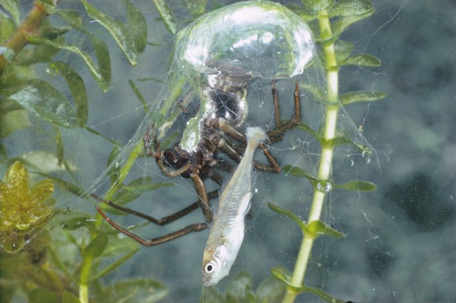
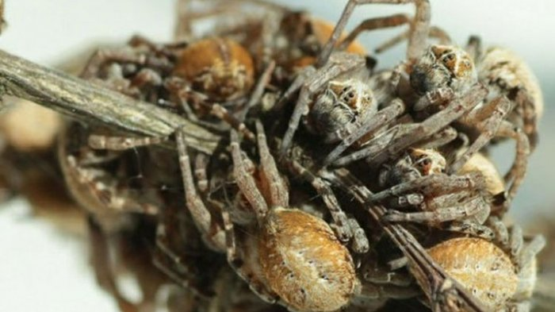

Perkenalkan Nama saya Ade Fitria Nurdin Rizky. Saya berasal dari Penajam Paser Utara dan saat ini saya sedang berkuliah di Universitas Mulawarman Jurusan Pendidikan Komputer. Saya tidak mempunyai hobi yang tetap gitu tapi saya sangat menyukai laba-laba yaa walaupun orang-orang sering bilang aneh tapi gapapa i like laba-laba. Selain itu, saya juga sangat menyukai Bunga tulip, karena warnanya unik-unik gitu banyak gradasinya sama sebenernya saya pengen ke Belanda makanya suka.
Tabel biodata
| No | Nama | Tgllhr | Alamat |
|---|---|---|---|
| 1 | Ade Fitria | 19 Nov 2004 | Jl. Suwandi |
Laba-laba adalah hewan arthropoda dari kelas Arachnida yang dikenal dengan kemampuannya membuat jaring untuk menangkap mangsa. Mereka memiliki delapan kaki, tidak memiliki antena, dan sebagian besar spesiesnya adalah predator yang memangsa serangga. Fakta laba-laba adalah arthropoda dari kelas Arachnida yang memiliki delapan kaki dan sering membuat jaring untuk menangkap mangsa. Meskipun sebagian besar memiliki delapan mata, beberapa spesies hanya memiliki enam atau dua. Jaringnya terbuat dari sutra yang lebih kuat dari baja dalam hal berat dan sangat elastis. Tidak semua laba-laba membuat jaring; beberapa, seperti laba-laba pelompat, berburu langsung dengan melompat. Hampir semua laba-laba memiliki racun, tetapi hanya sedikit yang berbahaya bagi manusia, seperti black widow dan brown recluse. Beberapa spesies, seperti laba-laba penyelam, bahkan bisa hidup di air. Dalam banyak budaya, laba-laba dianggap sebagai simbol kreativitas dan kesabaran.
Orb-Weaver adalah kelompok laba-laba pembuat jaring berbentuk spiral atau lingkaran sempurna. Mereka termasuk dalam keluarga Araneidae, salah satu keluarga laba-laba terbesar dengan lebih dari 3.000 spesies di seluruh dunia.
Argyroneta aquatica adalah satu-satunya laba-laba di dunia yang hidup sepenuhnya di dalam air. Laba-laba ini menggunakan gelembung udara sebagai "paru-paru" buatannya dan berburu mangsa di dalam air.
Stegodyphus dumicola adalah spesies laba-laba sosial yang hidup dalam kelompok besar dan bekerja sama untuk berburu, membangun sarang, serta merawat anak-anak mereka. Mereka ditemukan di daerah kering seperti Afrika bagian selatan dan Asia Barat.
Mau tau fakta unik tentang laba-laba? Simak video dibawah ini yaaa!
Nahh itu fakta unik dai laba-laba, jika kalian ingin tahu lebih banyak tentang laba-laba bisa klik link dibawah ini!
youtubeSekian dari saya mungkin untuk penutup lagu ini